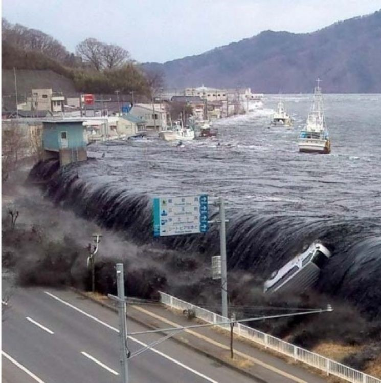

Un méga-tsunami s'est déclenché au Groenland en 2023, causé par un
immense glissement de terrain dans un port, provoquant des vagues
destructrices. Cette photo nous montre l'impact de l'incident.
Les tsunamis deviennent plus fréquents en raison du réchauffement
climatique et des activités humaines. La fonte des glaciers, notamment
au Groenland, augmente les risques de glissements de terrain massifs,
provoquant des vagues gigantesques. L'élévation du niveau de la mer
aggrave leur impact en permettant aux vagues de pénétrer plus profondément
dans les terres, causant des destructions majeures.